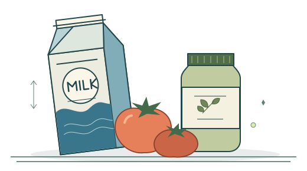
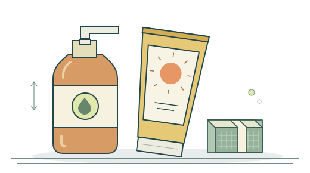

✳ 내 생활의 작은 보관함
사 둔 것을,
잘 쓰는 생활.
냉장고 속 우유부터 서랍 속 생활용품까지.
기한과 수량을 챙기고, 다음 장보기까지 이어가세요.
기억할 일은 알림온나에 조금 덜어두고요.
알림온나가 여러분의 가정에서 작지만 유용한 도구로, 부담 없이 편안하게 쓰이기를 바랍니다.
식품 · 생활용품 · 소모품을 위한 Android 앱
THE EVERYDAY COLLECTIONNº 01


하나씩
알뜰하게KEEP IT WELL
우리 집 냉장고
우유1팩 · 냉장2일 남음
토마토5개 · 채소4일 남음
기한이 가까운 것부터, 잊지 않도록.
잘 챙겨 쓸 것들01 — 02
우리 집 물건을 한눈에. 기능을 소개하기 위한 예시입니다.
덜 잊고. 덜 낭비하고. 더 잘 쓰고.작은 기록이 바꾸는 일상 ↓
01 / 생활의 흐름
사는 순간부터,
다시 필요한 순간까지.
보관 중인 물건, 사야 할 물건, 이미 산 물건.
각자의 자리에 정리하면 다음 할 일이 보입니다.
MY INVENTORY01
먼저 챙길 것들
이름 / 보관 장소남은 기한
우유냉장고 · 1팩D−2
토마토냉장고 · 5개D−4
선크림화장대 · 1개D−30
구매일과 만료일, 수량을 기록하고 기한이 가까운 품목을 확인하세요. 알림을 켜두면 설정한 시점에 챙길 수 있어요.
품목 관리 알아보기 ↗필요한 품목을 쇼핑 리스트로 보내고, 장볼 곳이나 목적에 따라 그룹으로 정리하세요. 구매한 물건은 관리대상에 새로 등록할 수 있어요.
쇼핑 리스트 알아보기 ↗PURCHASE ARCHIVE03
잘 샀다는 기록
동네 마트09. 12.
우유 2팩5,600원
달걀 1판7,900원
주방 세제 1개4,500원
구매 기록 합계18,000원
구매 내역에 날짜, 구매처, 수량과 가격을 남겨두세요. 언제 어디서 샀는지, 얼마였는지 궁금할 때 다시 찾아볼 수 있어요.
구매 내역 알아보기 ↗기능 설명을 위해 구성한 예시이며, 실제 앱 화면과 다릅니다.
냉장고 밖에서도
식품부터 생활용품까지,
챙겨야 할 기한을 한곳에.
먹는 것만 관리할 필요는 없어요.
날짜의 이름을 ‘등록일’, ‘교체일’로 바꾸면
집 안의 다른 물건들도 나란히 챙길 수 있어요.
날짜와 표시 설정 보기 ↗AFRESH & DAILY냉장고의 식품
소비기한
남은 수량 BCARE & BEAUTY화장대의 화장품
사용 기한
개봉 메모 CHOME & LIVING서랍 속 생활용품
교체할 날짜
보유 수량
02 / 나에게 맞는 정리
꼼꼼하게도,
간단하게도.
내 방식대로.
매일 보는 화면이니까.
필요한 정보만 꺼내놓고, 편한 모습으로 쓰세요.
나의 화면, 나의 색
9월가까워진 기한을 한눈에
월14화15수16목17금18토19일20
색상 분위기 예시 · 앱에서 나만의 테마를 만들어보세요.
글자보다 사진이 빠를 때
품목에 사진을 붙여 쉽게 구분하세요. 자주 쓰는 사진은 이미지 저장소에 모아둘 수 있어요.
이미지 관리 ↗찾기 좋은 나만의 분류
분류와 그룹, 태그로 물건을 정리하고 검색과 상세 조건으로 필요한 항목을 찾아보세요.
분류와 태그 ↗목록 밖에서도 한눈에
달력에서 날짜별 품목을 살펴보세요. 홈 화면 위젯으로도 가까운 기한을 확인할 수 있어요.
달력과 위젯 ↗입력할 수고를 조금 덜게
품목 복제와 연속 입력을 활용하세요. 영수증 인식과 AI를 활용한 스마트 등록도 지원해요.
스마트 등록과 설정 ↗매일 보는 화면을 내 취향으로
글자 크기, 표시 정보, 날짜 이름과 테마까지. 읽기 편하고 손에 익는 화면으로 바꿔보세요.
화면과 테마 ↗차곡차곡 쌓은 기록도 챙기기
기기에 저장한 데이터를 Google Drive에 백업하고 복원하세요. 엑셀 가져오기와 내보내기도 가능해요.
백업과 데이터 관리 ↗
일반적인 등록·조회는 기기의 데이터를 사용합니다. Google Drive와 AI 기능은 인터넷 연결 및 별도 설정이 필요하며, Drive 백업은 실시간 동기화 기능이 아닙니다.
03 / 오늘의 첫 기록
우선, 물건 하나부터.
모든 기능을 한 번에 익힐 필요는 없어요.
냉장고를 열고, 가장 먼저 눈에 들어온 것부터 적어보세요.
사용설명서와 함께 시작하기
- 1
자리를 정하고냉장고, 식료품, 생활용품… 분류를 준비하세요.
- 2
물건 하나를 적고이름과 기한, 남은 수량을 입력하세요.
- 3
알림을 켜두세요앱과 기기의 알림 설정을 함께 확인하세요.